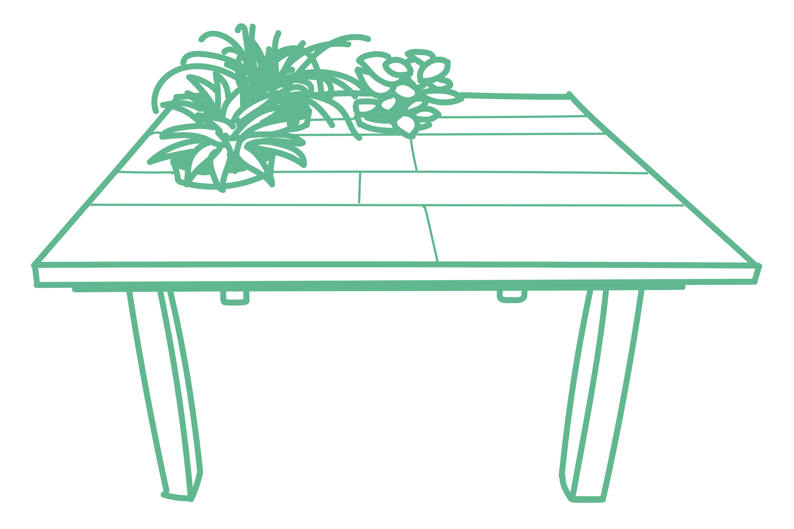

- 
-
Team Project
SketchUp
10 weken
Een van mijn favoriete projecten vanuit school vond ik het Passieproject, een team project waar je aan de hand van een gedeelde passie je eigen concept mag bedenken.
Eigenlijk was de enige eis was dat je als ontwerper een passie voor het gekozen onderwerp moest hebben. Als team hadden we een passie om fysieke dingen te maken, duurzaamheid en hergebruik. Hieruit rolde een concept die ons allemaal meteen aansprak, een tafel maken.
Het volgende waar we ons op gingen focussen was een concreet idee neerzetten. Zo hebben we onderzoek gedaan op internet en hebben een aantal randvoorwaarden vastgesteld. Er kwamen een paar ideeën voorbij. Een salontafel met een tuintje erin, een tafel met epoxy en ook een tafel met afgesloten opbergruimte. Om onze ideeën duidelijk over te brengen op elkaar hebben we onze gedachten gevisualiseerd doormiddel afbeeldingen.
Uiteindelijk vonden we het allemaal erg belangrijk dat de tafel met zoveel mogelijk duurzame materialen, dus eigenlijk meteen viel de tafel met de epoxy af. Als we keken naar het feit dat we aan het eind van het ontwerpproces een echte tafel in elkaar gingen zetten hadden we besloten om het concept van een tafel met afgesloten opbergruimte ook te laten vallen. Hierdoor bleef er maar 1 idee over. Een tafel van duurzame of hergebruikte materialen met een tuintje of ecosysteem erin.
Het was toen tijd om het idee verder uit te werken en te bedenken hoe de tafel eruit zou komen te zien, welke materialen het beste waren en hoe de tafel in elkaar zou gaan zitten. Door iedere dag verschillende schetsen te maken hebben we een heel breed beeld kunnen krijgen van alle mogelijke opties. Zo hebben we ronde tafels bedacht of juist vierkante of rechthoekige tafels, tafels van literflessen en tafels van papier maché of karton. Tafels met houten poten, of metalen poten in de vorm van een U of juist een A.
In de loop van het schetsen en bedenken van nieuwe soorten tafels hebben we met elkaar een paar ontwerpen gekozen die ons het meeste aanspraken en die het meest praktisch was voor ons om te maken.
Eenmaal twee ontwerpen gekozen te hebben zijn we deze verder gaan uitwerken. We gingen op zoek naar de juiste materialen en de anatomie van de tafel, op welke manier de tafel het stevigst zou blijven staan. Omdat we voor onszelf de regel hadden gesteld om zoveel mogelijk duurzame producten te gebruiken konden we niet zomaar de eerste de beste bouwmarkt binnen lopen om daar de materialen vandaan te halen. We hadden zowat heel marktplaats afgezocht om uiteindelijk via via een aantal pallets gratis te kunnen ophalen. De pallets zijn bij een bedrijf gebruikt en langzaam verwaarloost omdat ze niet meer volledig voldeden aan de eisen van het bedrijf. Top, het hout is binnen! Laten we beginnen met bouwen.
Tijdens het maken van de tafel kwamen we al snel tegen het eerste obstakel tegen. We hadden net niet genoeg hout om ons gekozen ontwerp te maken. We hebben meteen pen en papier erbij gepakt en een alternatief ontwerp gemaakt op basis van alle materialen die we wel hadden. Een net wat andere versie dan het origineel, maar zeker niet hetzelfde. We zijn vervolgens verder gegaan met het nieuwe ontwerp en gaandeweg steeds kleine aanpassingen gemaakt om de tafel zo stevig mogelijk te maken. Erg soepel kwamen langs alle onderdelen, de poten, het tafelblad, het schuren en het zagen, en we kwamen al snel bij een eindproduct. Het was toen alleen nog een kwestie van de punten op de i zetten en de tafel omdopen tot een nuttig meubelstuk.